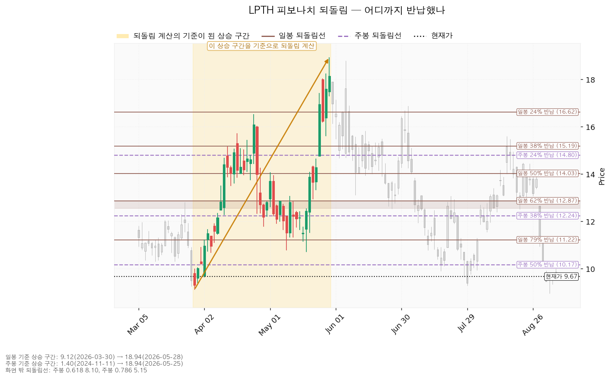
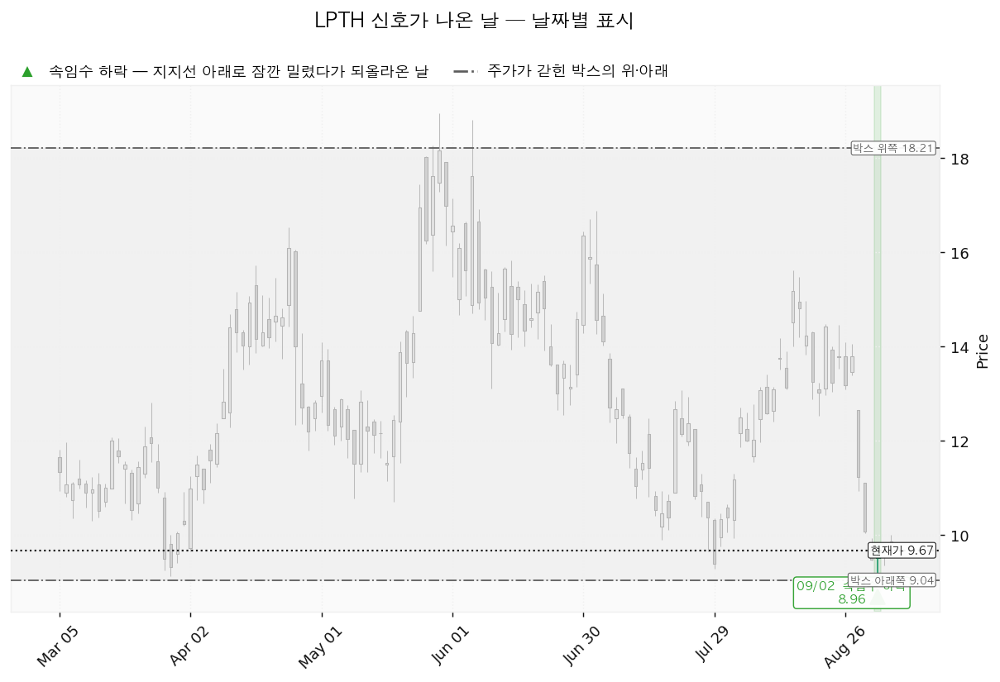
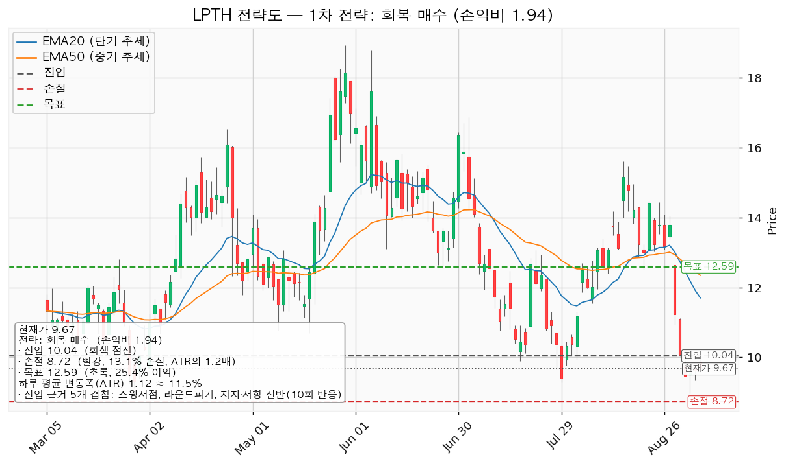
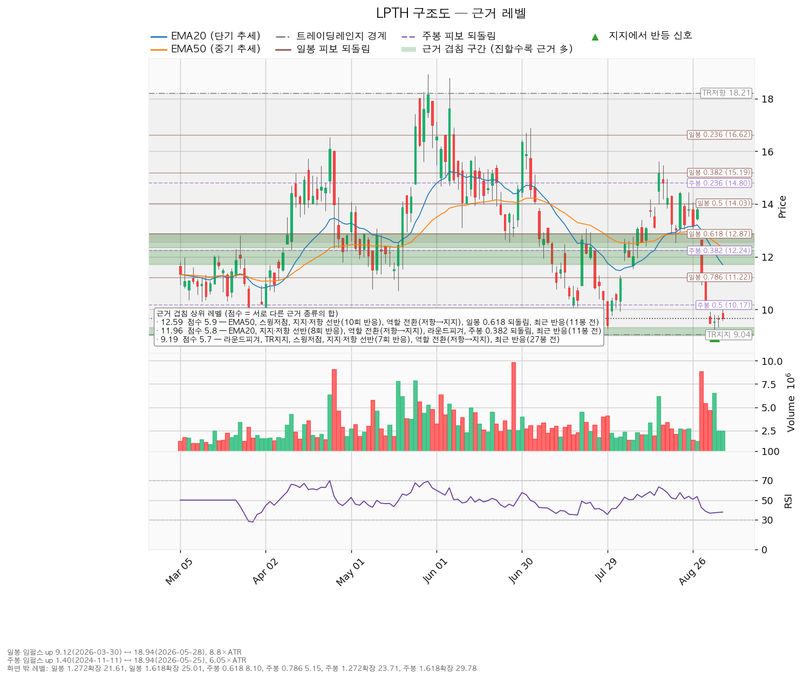

| 구분 | 가격 | 판정 방식 | 현재가(9.67달러) 대비 | 상태 |
|---|---|---|---|---|
| 회복선(진입 조건) | 10.04달러 | 일봉 종가로 회복한 뒤 되돌림에서 지지되는지 | +3.8% (하루 평균 변동폭의 0.33배) | 회복 대기 |
| 집행 손절 | 8.72달러 | 장중 저가 터치 시 집행 | -9.8% | 진입한 경우에만 유효 — 미진입 상태에서는 아무 의미가 없습니다 |
| 관망 종료 기준 | 9.00달러 또는 2026-09-11(실적) | 일봉 종가가 9.00달러 아래로 마감, 또는 실적 발표일 도래 — 둘 중 먼저 오는 쪽 | -6.9% | 유지 중 |
| 확인선 | 12.59달러 | 일봉 종가 돌파 후 되돌림에서 지지되는지 | +30.2% | 미돌파 |
| 폐기선(구조) | 9.04달러 | 종가 이탈 후 3거래일 내 회복 실패(또는 그 전에 7.92달러 아래 종가 마감) + 반등에서 저항으로 확인 | -6.5% (하루 평균 변동폭의 0.56배) | 유지 중 |
라이트패스 테크놀로지스(LPTH)는 열화상 카메라와 산업용 계측기에 들어가는 적외선 광학 렌즈·광학 조립체를 만드는 미국 기업입니다.
| 항목 | 값 |
|---|---|
| 현재가 | 9.67달러 |
| EMA20 / EMA50 (20일·50일 지수이동평균) | 11.70 / 12.35달러 — 둘 다 현재가 위에 있습니다 |
| RSI(14) (0~100 사이 과열·침체 지표) | 37.8 — 약세 구간이나 통상적 과매도 기준선 30 아래는 아닙니다 |
| ATR (하루 평균 변동폭) | 1.1159달러 = 주가의 11.5% |
| 국면 판정 | 횡보 레인지(구조 유지 — 하단 사수 조건부), 추세는 하락 |
일봉과 주봉 모두 계산 가능한 상승 구간이 있었습니다.
| 기준 | 구간 | 0.382 | 0.5 | 0.618 | 0.786 |
|---|---|---|---|---|---|
| 일봉 | 2026-03-30 9.12달러 → 2026-05-28 18.94달러 | 15.19 | 14.03 | 12.87 | 11.22 |
| 주봉 | 2024-11-11 1.40달러 → 2026-05-25 18.94달러 | 12.24 | 10.17 | 8.10 | 5.15 |

엔진이 잡아낸 신호는 하나입니다.
| 날짜 | 신호 | 가격 | 해석 |
|---|---|---|---|
| 2026-09-02 | spring(속임수 하락) | 8.96달러 | 박스 하단 9.04달러를 장중에 잠깐 뚫고 되돌아 올라온 움직임입니다. 매도 물량을 털어내는 신호로 쓰이며, 국면 후보가 매집(accumulation)으로 표시된 이유입니다. |
다만 이 신호는 아직 증명되지 않았습니다. 그날의 거래량이 평균의 1.94배로 이전 지지 테스트들보다 컸다는 점이 문제입니다. 진짜 스프링이라면 되돌아 올라오는 힘이 뒤따라야 하는데, 마지막 거래일(2026-09-04) 종가는 9.67달러로 여전히 박스 하단 바로 위에 머물러 있습니다. 그래서 국면 후보(매집)와 박스 안쪽 판정(분산 우위)이 서로 반대 방향을 가리키고 있으며, 10.04달러 종가 회복이 이 둘 중 어느 쪽이 맞는지를 가르는 자리입니다.

엔진이 산출한 셋업은 reclaim_long(회복 후 롱 전환) 하나뿐입니다. 되돌림 저가매수 셋업은 산출되지 않았습니다. 유효 박스는 있으나 박스 안쪽 판정이 분산 우위여서 지지 확인 매수의 조건을 채우지 못했기 때문입니다.
| 항목 | 내용 |
|---|---|
| 이름 / 방향 | reclaim_long / 롱 |
| 진입 | 10.04달러 — 일봉 종가로 회복한 뒤 |
| 진입 근거 (겹침 5.0점) | 스윙저점 + 라운드피겨 + 지지·저항 선반(10회 반응) + 주봉 0.5 되돌림 + 최근 반응(35봉 전) / 구간 9.90~10.17달러 |
| 손절 | 8.72달러 (진입 대비 -13.1%, 하루 평균 변동폭의 1.18배) |
| 손절 근거 | 근거 겹침 구간(9.00~9.31달러, 5.7점) 바로 아래에 두었습니다. 구간 안쪽이 아니라 아래에 둔 만큼 손절 폭이 넓어졌고 그만큼 손익비가 낮아졌습니다. |
| 목표 | 12.59달러 (진입 대비 +25.4%) |
| 목표 근거 (겹침 5.9점) | EMA50 + 스윙저점 + 지지·저항 선반(10회 반응) + 역할 전환(저항→지지) + 일봉 0.618 되돌림 + 최근 반응(11봉 전) / 구간 12.35~12.87달러 |
| 손익비 | 1:1.94 (손절 폭 1.18 ATR) |
| 구조 증명도 | 회복 확인형 (가중치 1.0) — 저항을 종가로 되찾은 뒤에만 들어가므로 진입가는 불리하지만 구조가 먼저 증명됩니다 |
| 엣지의 종류 | 모멘텀 — "저항을 종가로 되찾으면 그 방향이 이어진다"는 전제입니다. 자주 틀리고 소수가 크게 맞는 유형이며, 승률을 기대하는 셋업이 아닙니다(이 유형의 일반적 성격이며 이 엔진에서 측정한 값이 아닙니다) |
| 청산 | 목표 12.59달러에서 전량입니다. 트레일링은 걸지 않습니다. |
| 비중 | 계좌의 7.6% (1만 달러 계좌면 760달러어치). 1회 매매 손실 한도 1%(100달러)를 손절 폭 13.1%로 나눈 값이며, 한 종목 상한 13%보다 낮아 그대로 씁니다 |
대표 셋업 선정 이유: 손익비 1.94 × 구조 증명도(회복 확인형) × 근거 겹침 5.0점으로 선정했습니다. 산출된 셋업이 하나뿐이므로 손익비 1등과의 트레이드오프 문제는 발생하지 않습니다.
분할하지 않는 이유: 중간 레벨 10.99달러에서 50%를 익절하고 잔여분 손절을 진입가 10.04달러(본전)로 올리는 안도 함께 산출됐습니다. 그러나 그 중간 청산의 손익비는 0.72에 그쳐, 전 구간을 합친 손익비가 1.94에서 1.33으로 내려가고, 중간 청산 뒤 본전 손절에 걸리면 0.36까지 떨어집니다. 헤드라인 손익비 1.94는 목표에서 전량 청산할 때만 성립하는 숫자이며, 집행 정책이 고정돼 있으므로 이 리포트는 전량 청산 하나만 계획으로 냅니다.

저항 회복이 확인되기 전이므로 현재가 9.67달러에서 사는 것은 권하지 않습니다. 대기 좌표는 다음과 같습니다.
| 항목 | 값 |
|---|---|
| 아래쪽 진입 후보 | 9.19달러 (겹침 5.7점 — 라운드피겨 + 박스 하단 + 스윙저점 + 선반 7회 반응 + 역할 전환(저항→지지)) / 구간 9.00~9.31달러 |
| EMA20 투영치 | 현재 11.70 → 5봉 후 10.90달러 |
| EMA50 투영치 | 현재 12.35 → 5봉 후 11.86달러 |
이 투영치는 현재가 9.67달러가 5거래일 동안 그대로 유지될 경우 이동평균선이 내려앉을 위치이며, 가격 예측이 아닙니다. 이동평균이 내려오면서 회복선까지의 거리가 좁아진다는 뜻으로만 읽으시면 됩니다.
이 종목의 하루 평균 변동폭은 주가의 11.5%로 매우 큽니다. 손절 폭 13.1%는 그보다 넓으므로(1.18배) 논지와 무관한 일상적 흔들림만으로 손절에 닿을 가능성은 낮습니다. 다만 손절 폭 자체가 13%라는 점은 감안하셔야 합니다. 비중 7.6%가 바로 이 넓은 손절 폭 때문에 나온 값입니다.
진입에서 목표까지는 2.55달러로 하루 평균 변동폭의 2.29배입니다. 관행적으로 트레일링을 검토할 만한 폭(2배 이상)에는 해당하나, 이 정합성 기준은 정설이 아니며 집행 정책상 트레일링은 걸지 않습니다. 12.59달러 위 구간은 이 포지션의 연장이 아니라 새 셋업으로 다시 잡습니다.
확인선과 대표 셋업의 목표가 같은 12.59달러인 것은 모순이 아니라 분기입니다.
박스 상단 18.21달러는 맥락으로만 적습니다. 현재가에서 +88% 떨어져 있어 실행 좌표가 되지 못합니다.
| 단계 | 트리거 | 의미 | 행동 |
|---|---|---|---|
| ① 관찰 | 일봉 종가가 10.04달러 아래로 마감 | 구조 이탈의 시작일 뿐 무효가 아닙니다. 되돌아 올라오면 오히려 스프링일 수 있습니다 | 신규 진입만 중단하고, 집행 손절은 그대로 둡니다 |
| ② 경고 | 이탈 후 3거래일 안에 10.04달러를 종가로 회복하지 못하거나, 그 전에 일봉 종가가 8.92달러 아래로 마감(하루 평균 변동폭의 1배만큼 더 밀림) — 둘 중 먼저 오는 쪽 | 저항 회복 실패 가능성이 우세해집니다 | 잔여 비중 축소. 반등이 나오면 이 가격에서의 반응을 확인합니다 |
| ③ 무효 | 반등이 10.04달러에서 막히고 그 아래로 되밀림(지지가 저항으로 전환) | 셋업 폐기 — 구조 해석이 틀린 것으로 확정 | 포지션 정리 후 새 구조가 만들어질 때까지 관망 |
집행 손절 8.72달러는 이 3단계 판정과 무관하게 별도로 작동합니다. 그리고 장중 일시 이탈은 어느 단계에도 해당하지 않습니다.
폐기선 9.04달러는 실무적으로 작동하는 거리에 있으나, 이 종목의 논지는 가격만으로 결판나지 않습니다. 9월 11일 실적에서 아래가 나오면 가격이 어디에 있든 롱 전환 논지를 접습니다.
1. 다음 12개월 EPS 컨센서스 0.02달러 경로가 다시 하향되는 경우 — 이미 90일 사이 0.03 → 0.02달러로 -33.3% 내려온 상태입니다. 두 번째 하향은 흑자 전환 시점이 계속 밀린다는 뜻입니다. 2. 영업활동 현금흐름이 또 음수로 나오는 경우 — 직전 수치가 -776만 달러입니다. 설비투자를 -42.2% 줄이고 있는데도 영업 단계에서 현금이 계속 나간다면, 이는 투자가 앞선 적자가 아니라 본업의 적자입니다.
조건: 10.04달러 종가 회복 후 지지 확인 → 12.59달러 종가 돌파 구조: 9월 2일 속임수 하락이 진짜였음이 확인되고 → 거래량을 동반한 상승이 나온 뒤 → 되돌림에서 지지를 확인하고 → 상승 국면으로 넘어가는 순서입니다 행동: 10.04달러 회복과 지지를 확인한 뒤 계좌의 7.6%로 진입하고, 12.59달러 돌파 시에는 새 셋업으로 다시 잡습니다.
조건: 9.04달러를 지키면서 12.59달러 아래 박스에 머무름 구조: 구조는 그대로 유지되는 상태입니다. 매물을 소화하는 데 시간이 필요한 국면이며, 부정적 신호가 아닙니다. 행동: 신규 진입은 보류하고 아래 세 가지를 추적합니다.
| 추적 항목 | 좋아지는 모습 | 현재 관측치 |
|---|---|---|
| 지지 테스트 거래량 | 테스트를 반복할수록 매도 거래량이 줄어듦 | 증가 (0.58배 → 1.43배 → 1.94배) |
| 박스 안 저점 | 저점이 절상됨 | 절하 (9.90 → 9.28 → 8.96달러) |
| 상승봉 대 하락봉 거래량비 | 1보다 뚜렷하게 커짐 | 1.08 (거의 균형) |
세 항목 모두 아직 매집 쪽 증거를 내주지 않고 있습니다. 이 표의 값이 바뀌는지가 관망을 이어갈지 판단하는 실질적 기준입니다.
조건: 9.04달러 종가 이탈 후 3거래일 내 회복 실패(또는 그 전에 7.92달러 아래로 종가 마감) + 반등에서 9.04달러가 저항으로 확인 구조: 매집이 아니라 재분산이었다는 뜻이며, 추가 저점 갱신 가능성을 엽니다 행동: 포지션을 정리하고, 투매가 한 번 크게 나온 뒤 새 박스가 만들어질 때까지 관망합니다
점수는 서로 다른 근거 종류의 가중치 합입니다. 같은 종류가 여러 개 붙어도 한 번만 가산되므로, 점수가 높다는 것은 성격이 다른 근거들이 같은 가격대에 모여 있다는 뜻입니다.
| 가격 | 구간 | 점수 | 근거 |
|---|---|---|---|
| 12.59달러 | 12.35~12.87 | 5.9 | EMA50, 스윙저점, 선반(10회 반응), 역할 전환(저항→지지), 일봉 0.618 되돌림, 최근 반응(11봉 전) |
| 11.96달러 | 11.70~12.24 | 5.8 | EMA20, 선반(8회 반응), 역할 전환(저항→지지), 라운드피겨, 주봉 0.382 되돌림, 최근 반응(11봉 전) |
| 9.19달러 | 9.00~9.31 | 5.7 | 라운드피겨, 박스 하단, 스윙저점, 선반(7회 반응), 역할 전환(저항→지지), 최근 반응(27봉 전) |
| 10.04달러 | 9.90~10.17 | 5.0 | 스윙저점, 라운드피겨, 선반(10회 반응), 주봉 0.5 되돌림, 최근 반응(35봉 전) |
| 10.99달러 | 10.86~11.22 | 3.8 | 선반(8회 반응), 역할 전환(저항→지지), 라운드피겨, 일봉 0.786 되돌림 |
| 8.05달러 | 8.00~8.10 | 2.1 | 라운드피겨, 주봉 0.618 되돌림 |
현재가 9.67달러는 9.19달러 구간(5.7점)과 10.04달러 구간(5.0점) 사이의 빈 공간에 있습니다. 위아래 모두 가까이 있어 방향이 정해지지 않은 자리이며, 이것이 지금 진입 근거가 약한 이유입니다. 역할 전환 표시가 붙은 구간들은 과거 저항이던 자리가 지지로 바뀐 곳이므로, 다시 저항으로 되돌아갈 수도 있는 가격대입니다.

| 항목 | 값 |
|---|---|
| 애널리스트 수 / 추천등급 | 5명 / strong_buy |
| 목표주가 (평균 / 최저 / 최고) | 15.58 / 15.00 / 17.00달러 |
| 후행 PER | 산출 불가 (후행 EPS -0.50달러, 적자) |
| 선행 PER | 483.5배 (선행 EPS 0.02달러) |
| 올해 EPS 컨센서스 | -0.155달러 (범위 -0.29 ~ -0.02) |
| 내년 EPS 컨센서스 | +0.02달러 (범위 +0.01 ~ +0.03) |
| 다음 실적일 | 2026-09-11 |
(a) 배수 두 가지를 함께 봅니다. 후행 PER은 적자라 산출되지 않고, 선행 PER 483.5배는 선행 EPS가 0.02달러라는 아주 작은 분모에서 나온 값입니다. 이 종목은 이익 배수로 비싸다·싸다를 판정할 수 있는 단계가 아닙니다. 올해 적자가 -0.155달러에서 내년 +0.02달러로 흑자 전환하는 것이 컨센서스이며, 판단은 배수가 아니라 이 전환이 실제로 일어나는지에 달려 있습니다.
(b) 목표주가는 분포로 봅니다. 평균 15.58달러이지만 최저 15.00달러, 최고 17.00달러이고, 현재가 9.67달러는 애널리스트 5명 전원의 목표 가운데 가장 낮은 15.00달러보다도 아래입니다. 다섯 명 전부가 틀렸거나, 아직 목표를 고치지 않았거나 둘 중 하나입니다.
(c) 하락의 정체 — 배수 수축이 아니라 추정치 하향입니다. 이 구분이 이번 리포트에서 가장 중요합니다.
| 기간 | 올해 EPS | 내년 EPS |
|---|---|---|
| 90일 전 | -0.02달러 | +0.03달러 |
| 30일 전 | -0.02달러 | +0.03달러 |
| 현재 | -0.155달러 | +0.02달러 |
올해 적자 폭이 -0.02달러에서 -0.155달러로 크게 벌어졌고, 내년 이익 추정치도 -33.3% 내려왔습니다. 추정치가 내려가면서 가격이 내린 것이므로 이것은 배수 수축이 아니라 실적 전망의 하향입니다. 저가매수 논리를 쓸 수 있는 국면이 아니며, 박스 안쪽 판정이 분산 우위로 나온 것과 방향이 일치합니다.
(d) 현금흐름의 성격. 영업활동 현금흐름이 -776만 달러로 음수입니다. 영업 단계에서 현금이 나가고 있다는 뜻이며, 설비투자가 앞선 적자와는 성격이 다릅니다. 설비투자는 218만 달러에서 126만 달러로 -42.2% 줄었는데, 투자를 줄이면서도 영업에서 현금이 나간다는 점이 문제의 핵심입니다.
(e) 상승 여력의 분해. 목표주가 평균 15.58달러를 내년 EPS 컨센서스 0.02달러로 나누면 779배가 나옵니다. 현재 선행 PER 483.5배와 비교하면, 이 목표주가는 이익으로 설명되지 않습니다. 애널리스트들이 매출 배수 등 이익 외의 기준으로 값을 매기고 있다는 뜻이며, 이익이 목표를 떠받치려면 지금 컨센서스보다 훨씬 큰 이익이 필요합니다. 컨센서스 목표를 근거로 이 종목을 사는 것은 이익이 아니라 배수에 거는 일입니다.
주도주 여부 판정: 주도주가 아닙니다. 추세는 하락이고, 현재가는 EMA20·EMA50 아래에 있으며, 박스 안쪽은 분산 우위이고, 실적 추정치가 90일 사이 내려왔습니다. 네 가지가 모두 같은 방향을 가리킵니다.
| 날짜 | 이벤트 | 볼 것 |
|---|---|---|
| 2026-09-11 | 분기 실적 발표 | ① 영업활동 현금흐름이 음수를 벗어났는지(직전 -776만 달러) ② 다음 분기 가이던스가 내년 EPS 0.02달러 경로를 지지하는지, 아니면 세 번째 하향인지 ③ 잉여현금흐름 수치의 불일치가 해소되는지 |
이 리포트는 정보 제공 목적이며 투자 권유가 아닙니다. 최종 판단과 책임은 투자자 본인에게 있습니다.